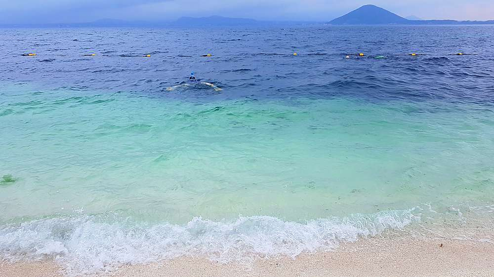

우도
🔸소개
우도가 제주도의 일몰과 일출의 명소라는 사실, 알고 계셨나요? 이외에도 우도에는 풍부한 볼거리들이 있습니다.
특별한 해안 절경을 이루는 동굴과 서빈백사 뿐만 아니라, 오름과 한라산의 산세가 한 눈에 들어오는 곳이기도 합니다.
해녀가 가장 많은 섬으로 뿔소라 등 해산물이 풍부한 곳이기도 하죠.
🔸주변 광광지
- 밤수지맨드라미 책방
- 비양도 별밤투어
- 우도봉 눈꼽 트레킹
- 비양도 투어
- 천진항 또는 하우목동항
일정은 짧고 갈 곳은 많고. 먹고 싶은 것도 보고 싶은 것도 많은데 ... 여행 인플루언서들이 강력 추천하는 여행지들을 모았습니다. 한눈에 보이는 제주 여행지 위시리스트 4곳!

우도가 제주도의 일몰과 일출의 명소라는 사실, 알고 계셨나요? 이외에도 우도에는 풍부한 볼거리들이 있습니다.
특별한 해안 절경을 이루는 동굴과 서빈백사 뿐만 아니라, 오름과 한라산의 산세가 한 눈에 들어오는 곳이기도 합니다.
해녀가 가장 많은 섬으로 뿔소라 등 해산물이 풍부한 곳이기도 하죠.